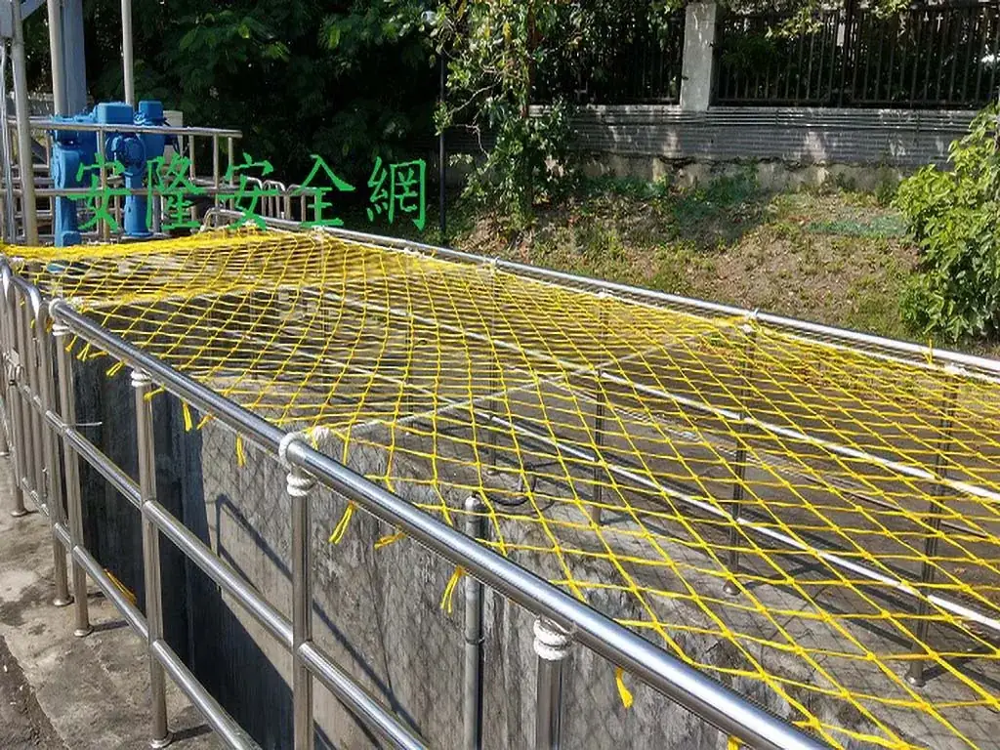
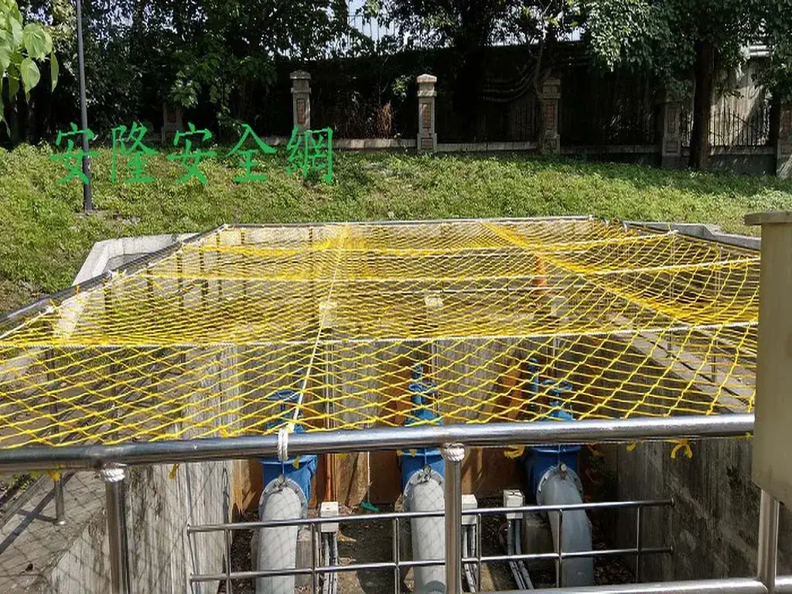
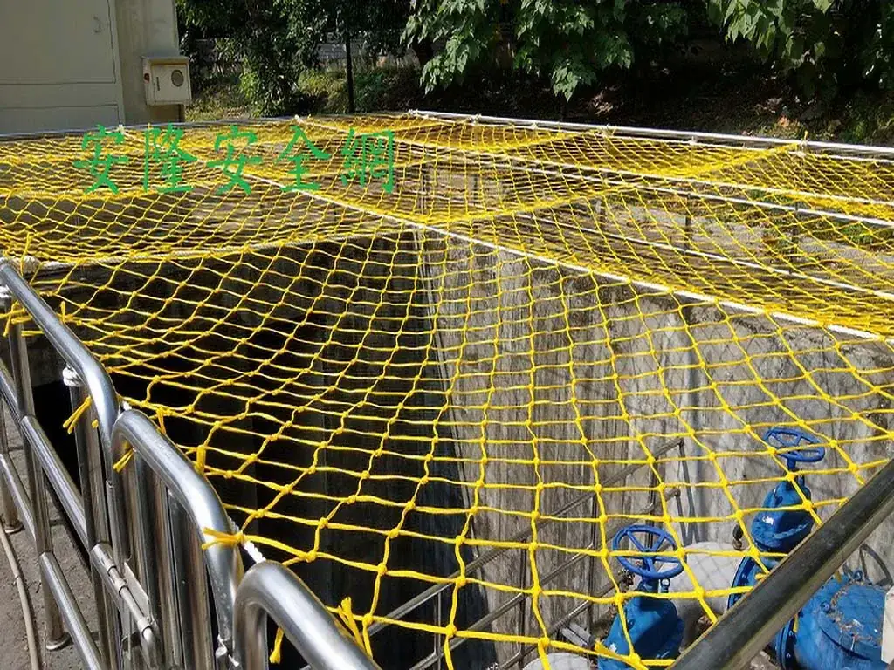

新北市抽水站 設施開口防墜網
抽水站設備區開口以水平安全網覆蓋，保留設備視線與操作空間，同時補強開口防墜。



施工目的與現場做法
本案位於抽水站設備區。從完工照片可見，黃色水平安全網覆蓋在混凝土開口上方，並配合既有金屬欄杆與設備配置張掛，用於降低巡檢或維修人員靠近開口時的墜落風險。
機電與水務設施的防護不能妨礙設備操作。規劃時應同步確認開口尺寸、固定結構、維修拆裝需求、潮濕環境、下方淨空及安全網巡檢方式，再決定固定式或可拆式配置。
照片與資料說明
既有資料可確認場域、防護位置與完工樣貌，但沒有留存原案年份、網材線徑、網目或驗收文件。本頁不以照片推定規格；相同公共工程應依現況、採購文件與適用法規重新確認。